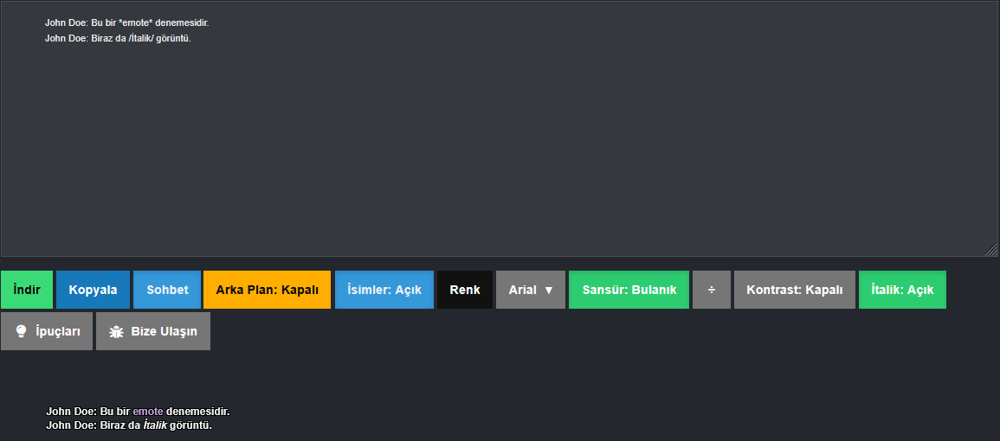

Eksik çeviri mi var?
Birçok sistem mesajı zaten boyanıyor ama bazıları henüz eksik olabilir — siz de öneri gönderebilirsiniz.
×
TXT dosya yükleveya sürükle-bırak
Deneysel Özellik
Taşıma Aracı
Ekran görüntünüzü buraya bırakın
veya göz atmak için çift tıklayın •
Ctrl+V
ile yapıştırın
Çalışma Alanı İpuçları
Satırları sürükleyerek konumlandırın, Ctrl+tık ile çoklu
seçin.
Sağ tık ile bağlam menüsünü açın — gizle, sil, renk değiştir.
Ctrl+Z geri al, Ctrl+Y ileri al.
Sağ panelden opaklık, bulanıklık ve renk ayarlayın.
Katmanlar
Katman Listesi
Katman yok
Görsel yükleyin veya + butonuna tıklayın
Katman Efektleri-
Opaklık
100%
Bulanıklık
0px
Parlaklık
100%
Kontrast
100%
Doygunluk
100%
Vignette
0%
Siyah Beyaz
Özellikler
Özellikleri görmek için bir katman veya sohbet satırı seçin.
Opaklık
100%
Çıktı Boyutu
px
px
X: 0 Y:
01920 ×
1080
Taşıma
100%
Sohbet Kaydı Geçmişi
Sohbet kaydı geçmişiniz yükleniyor...
Renk Seç
0 seçildi
Kelimeleri farenizle seçin,
ardından yukarıdan renk atayın.
Fotoğraf Modu Nasıl Kullanılır?
Hızlı Başlangıç
1
Görsel Yükle
Ekran görüntünüzü sürükle-bırak veya Ctrl+V ile yapıştır
2
Sohbeti
Yapıştır
Üstteki metin alanına chatlog'unuzu yapıştırın
3
Konumlandır
Sohbeti istediğiniz yere sürükleyin veya hızlı pozisyon butonlarını kullanın
4
İndir
Yeşil "İndir" butonuna tıklayın
Kontroller
Görüntüyü hareket ettir
Boş alana tıklayıp sürükle
Sohbeti hareket ettir
Sohbetin üzerine tıklayıp sürükle
Görüntüyü yakınlaştır
Fare tekerleği (scroll)
Sohbeti yakınlaştır
Ctrl + Fare tekerleği
Klavye Kısayolları
Ctrl+VGörsel yapıştır
1-9Hızlı pozisyon (numpad)
RKonumu sıfırla
Ok TuşlarıHızlı pozisyon (10px)
Shift + OkHassas pozisyon (1px)
İpuçları
Sohbet satırlarını tek tek sürükleyip istediğiniz yere koyabilirsiniz.
Ok tuşları ile seçili satırı taşıyabilirsiniz.
Shift tuşuna basılı tutarak ok tuşlarını kullanırsanız daha hassas hareket eder.
"Görüntü Ayarları" panelinden bulanıklık, opaklık ve siyah-beyaz efektlerini kullanabilirsiniz.
Çıktı boyutunu değiştirmek için preset butonlarını kullanın.
Tüm Özellikler ve İpuçları
Chatlog Renklendirme
Sohbet modunda bir kelimeye tıklayarak rengini değiştirebilirsiniz.
Çoklu seçim için CTRL + tıklama veya sürükleme.
Karakter Adı Vurgulama
Karakter adınızı girerek size gelen mesajların farklı renkte vurgulanmasını sağlayabilirsiniz.
Sansür Kullanımı
Metnin başına ve sonuna ÷ koyarak sansür uygulayabilirsiniz.
Modu üstteki butonlardan değiştirebilirsiniz.

Hızlı Metin Formatlama
*Metin* → ame/me rengi /Metin/ → italik (isteğe bağlı)
Sohbet Modu Ayarları
İsimler
Karakter adını girdiğinizde size
yönelik mesajlar farklı renkte vurgulanır. Butonu kapatırsanız tüm isimler standart renge döner.
Renk Paleti
Çıktıdaki bir kelimeye tıklayarak
renk atayabilirsiniz. Birden fazla seçim için Ctrl +
tıklama veya sürükleme kullanın. Sağ tık ile de renk menüsüne ulaşabilirsiniz.
Sansür
Gizlemek istediğiniz metnin
başına ve sonuna ÷ karakterini koyun. Sansür stilini
(bulanık ve kaldır) üstteki butondan değiştirebilirsiniz. ÷ karakterini kopyalamak için yanındaki butona
basın.
İtalik & Emote Boyama
Metinde *yıldız* ile sarılmış kısımlar otomatik olarak
ame/me renginde görünür. /eğik çizgi/ ile
de italik efekti alabilirsiniz.
Font
Çıktının yazı tipini değiştirin.
Farklı fontlar farklı bir his yaratır; GTAW içi görünüme en yakın sonuç için Arial önerilir.
Kontrast
Yazının arka planına hafif bir
karartma ekler; koyu veya karmaşık görsellerin üstünde metni daha okunabilir kılar.
Arka Plan
Çıktının arkasına siyah bir
görüntü ekler. Chatlog'u bir görselin üstüne yerleştirirken okunabilirliği artırır.
Son Güncellemeler v1.4.1
v1.4.1 — Hibrit Mimari & Görsel Kalibrasyon
İngilizce ve Türkçe log formatları hibrit bir mimariyle tek çatı altında birleştirilerek uyuşturucu, eşya
transferi ve hapis gibi bilgi mesajlarının her iki dilde de kusursuz çalışması sağlandı.
Ana menü kalabalığını azaltmak adına sistem bildirimlerini açıp kapatan filtre, ekranın sağ üst köşesine
sabitlenmiş modern bir süzülen ikon (Floating Action Button) mimarisine taşındı.
Loglarınızda sıkça karşılaştığınız "isim ve eylemin bitişik yazılması" sorunu (Örn: > John Doegülümser),
metin içindeki yanlış kelime bölünmelerini (bugları) önlemek amacıyla sadece sisteme kaydettiğiniz
kendi karakter adınızda geçerli olacak şekilde otomatik boşluk bırakılarak çözüldü.
Ş, ç, g gibi alt kuyruklu harflerin ve özel sembollerin arka plan boyama alanının dışına taşması sorunu,
detaylı bir padding kalibrasyonu ile tamamen giderildi.
Çıktı ekranında görsel kirlilik yaratan "CHAT LOG:" ibareleri ve gereksiz sistem mesajları, metnin anlam
bütünlüğü bozulmadan otomatik olarak temizlenecek şekilde ayarlandı.
Sistem tarafından atanan otomatik renk kilitleri devreden çıkarıldı. Yeni "TreeWalker" altyapısı
sayesinde, ekrandaki spesifik kelimeler veya satırlar üzerindeki manuel renk atama kısıtlamaları tamamen
kaldırılarak serbest seçim mimarisine geçildi.
Rol akışını ve okunabilirliği bozan gereksiz sistem mesajlarının (kapı kilitleri, eşya/mülk uyarıları,
puan bildirimleri vb.) yarattığı kirliliği engellemek amacıyla, tek tıkla kontrol edilebilen "Sistem
Bildirimleri" filtresi entegre edildi.
Hava durumu, [STREET], departman ve interkom loglarını tarayan motor optimize edildi. Sunucu kaynaklı
oluşabilecek format, boşluk veya harf farklılıklarına karşı sistemin tolerans eşiği artırılarak
biçimlendirme hataları kesin olarak önlendi.
Çıktı ekranındaki metin dizilimi standartlara uygun olarak yeniden yapılandırıldı. Satır aralıkları
(spacing) normalize edilerek, sıkışık görünüm engellendi ve görsel bütünlük sağlandı.
Karakter mal varlığı ve banka verilerini içeren log satırlarındaki bölme ("/") sembollerinin, sistemin
italik metin formatlayıcısı ile çakışması sonucu oluşan hatalı biçimlendirme sorunu kökünden giderildi.
v1.3.0 (Arayüz & Özellik Güncellemesi)
Sohbet çıktılarını indirmeden doğrudan kopyalamak için "Kopyala"
düğmesi eklendi.
Sohbet içinde *emote* vurgulaması ve /italic/ desteği eklendi.
Ayarlar kısmından italik ayrıştırmayı dilediğiniz gibi kapatıp
açabilirsiniz.
v1.2.2 (Hata Düzeltmesi)
Özellikle UCP'den alınan chatloglarında sıkça karşılaşılan ve metnin arasına karışarak
metni bozan ~y~ etiketleri sorunu tamamen çözüldü. Bu ibareler artık sihirbaza
girdiği an otomatik olarak temizleniyor.
v1.2.1 (Editör Güncellemesi)
"Parlaklık", "Kontrast", "Doygunluk" ve "Vinyet" ayarları eklendi. Artık fotoğrafınızın
birçok görüntü ayarını bunları kullanarak gerçekleştirebileceksiniz.
Satır Gizle/Göster aracı eklendi. Fazladan eklediğiniz veya istemediğiniz satırları bu
araç ile gizleyebilirsiniz.
Fotoğraf editörüne Ctrl+Z / Ctrl+Y ile çalışan kapsamlı Undo/Redo (Geri/İleri Alma)
sistemi eklendi.
Sağ tık bağlam menüsü, kırpma aracı, özel metin ekleme aracı tamamen baştan yazılarak aktif hale
getirildi.
Seçili satırları büyütüp küçültmeyi sağlayan "Seçim/Boyutlandırma Çerçeveleri" (Handles) sisteme entegre
edildi.
Alt kısımdaki durum çubuğu (Status bar) aktif araç, boyut ve koordinat takiplerini yapacak şekilde
canlandırıldı.
v1.2.0
UCP'den alınan chatloglarında gözüken !{#C2A2DA} tarzındaki hex kodları artık algılanıp yazıyı otomatik
olarak belirtilen renge boyuyor.
v1.1.0
Sohbet eklendikten sonra karakter adı girildiğinde renklerin eş zamanlı yenilenmesi sağlandı.
İsimleri kapatma butonu düzeltildi, artık direkt standart beyaza dönüyor.
Tüm özellik renkleri, butonlar ve yönlendiriciler Türkçeleştirildi.
Renk hafızası sıfırdan yazıldı, manuel ayarlanan renkler asla bozulmuyor.
İstek & Öneri
Her türlü geri bildirim için
buradasınız.
Açıklama alanına hangi sistem mesajının boyanmadığını
ve varsa log örneğini yazarsanız çok yardımcı olursunuz.